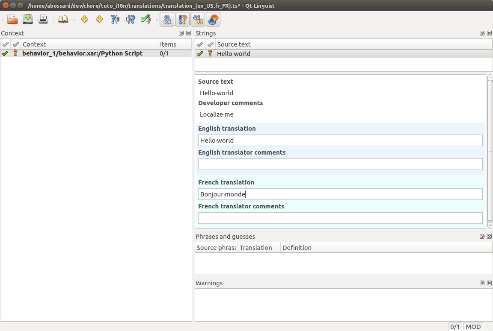

Translation files¶
What are Translation files¶
Translations files have the TS extension.
Translations files are the translation source files that allow you to translate localized texts of your application.
There is at least one file for each supported language in your application. Each file is visible in the Project files panel panel and can be opened from there.
They are generated and updated automatically as you write your application. You have to fill them with the relevant translations or hand them to someone who could.
A translation file is made of messages. A message has a context (usually a behavior box path) and a source text (the value of the parameter). Every context and source text are the same in each translation file of your application. Those are the unique ID across your application. This is what you will translate in the appropriate language in each TS file to make your application localized.
Choregraphe integrates everything needed for you to be able to:
- add a translation.
- Edit a translation file using linguist Qt Linguist.
- use a localized text.
Qt Linguist¶
By double clicking on a translation file, Choregraphe will open the file in Qt linguist.
Qt has a very comprehensive manual, you can find it here: http://doc.qt.io/qt-5/qtlinguist-index.html.
Managing translations using Qt linguist¶
Translation files are updated each time you open them (just before).
To manually launch the gathering process, choose File > Update Translations.
| Part | Name | Description |
|---|---|---|
| A | Context | Location of your Source text. Here it is the path of a Python Script box inside the project. |
| B | Source Text | Content to translate inside the selected context. If we had another parameter to your Python Script, the new parameter would show here. |
| C | Message View | This will display all available information about the specific message. ‘Developers Comment’ is always filled with the name of the box parameter. |
| D | Translations edit | This were you will actually write your translation. There is one for each translation file opened. |
| E | Finished button | Once you have written your translation mark it has finished. You have to do that for every message in every translation file of your project. |
As you can see the English translation have been ‘auto-filled’ by its source text, see for more explanation. You still have to validated it the first time it is filled. In the French translation we put the text ‘Bonjour monde’ and validate it.
When you a are done, save the file(s), and exit Qt linguist.